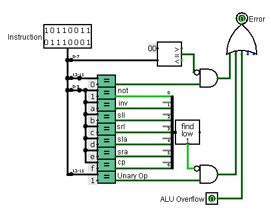
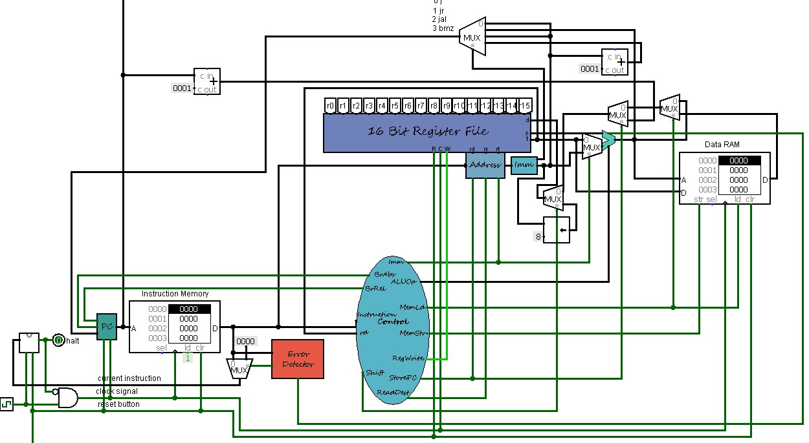

Project 7: Datapath in Use
Error Detector
Om overflow en errors te detecteren bouwden we een error detector. Deze krijgt een instructie en ALU overflow als input. Het programma moet stoppen als ofwel de ALU overflow true wordt, de operatie 0000 is maar toch 1'en bevat of als de 4 minst significante bits bij een unary operation geen geldige unary operation is dat ondersteund wordt door ons full datapath.
Full Datapath
We implementeren de error detector door een multiplexer toe te voegen tussen de instruction memory en de halt. Indien er een error gedetecteerd werd, wordt de nieuwe instructie 0000, wat ervoor zorgt dat het programma stopt.
Fibonacci
Volgende code berekent de fibonacci gevallen tot er een error gedetecteerd wordt:
LOADMEM
# Initialize
zero r5
ori r6 1
sw r5 r5 0
sw r6 r6 0
ori r7 1
# Loop
lw r1 r5 0
lw r2 r7 0
add r3 r1 r2
sw r3 r7 1
add r5 r5 r6
add r7 r7 r6
j 5
Als we deze code inladen in logisim zien we dat er overflow voorkomt vanaf het hexadecimale getal 6ff1.